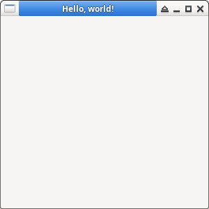

參考資訊：
https://docs.wxwidgets.org/3.0/overview_helloworld.html
main.cpp
#include <wx/wx.h>
#include <wx/wxprec.h>
class MyApp : public wxApp
{
public:
virtual bool OnInit();
};
class MyFrame: public wxFrame
{
public:
MyFrame(const wxString &title, const wxPoint &pos, const wxSize &size);
};
wxIMPLEMENT_APP(MyApp);
bool MyApp::OnInit()
{
MyFrame *frame = new MyFrame("Hello, world!", wxPoint(0, 0), wxSize(300, 300));
frame->Show(true);
return true;
}
MyFrame::MyFrame(const wxString &title, const wxPoint &pos, const wxSize &size) : wxFrame(NULL, wxID_ANY, title, pos, size)
{
}
編譯、執行
$ g++ main.cpp -o main `wx-config --libs --cxxflags` $ ./main
